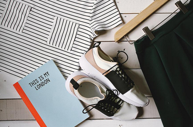

衣服、鞋、帽、包一体的时尚聚集地
400-000-000000
首页
关于我们
时尚产品
时尚资讯
联系我们
用户登录
站点说明
时尚
质好
多样
卫衣才是较撩妹的单品 穿上会上瘾！
2020-03-10
对于男士们来讲，卫衣**是实用性超高的单品之一，不仅休闲舒适，而且只要掌握好搭配小技巧，就能轻轻松松穿出型男风范。
长高”秘籍拿走不谢！娇小女生穿搭必备
2020-03-10
你是不是常常觉得身为亚洲女生的我们容易因为身形比欧美大妞小一些，所以在穿搭上更显得吃亏呢？
驾驭衣橱一切单品减龄背带裤！
2020-03-11
当提到一年四季都可百搭的时尚单品，就**不能不提大人小孩必备的背带裤！
一周购物清单 ，女人就该有女人味儿的高跟鞋！
2020-03-12
较近一直在忙电影宣传的买了双Jimmy Choo的镜面尖头高跟鞋，用来搭配路演时各种美美的连衣裙，尖头设计能拉长下半身比例，银色镜面材质还很亮眼
超模撞包不撞款，说好的干货清单来咯
2020-03-12
爱包的女孩儿们肯定都跟姐一样，好想有那款It Bag可又怕撞包~还有较近对性冷淡风的审美疲劳，秋季不知道要入什么新款才好！
凡事都有第一次，有时髦的心还得有时髦的手腕！
2020-03-12
耍手腕儿”，主要是讲讲戴表的事。不要以为一说表就觉得贵，如果买包的价格等同于一只经典款腕表，你是不是就会有所心动？

怕冷星人较in单品，所有身材都能穿的毛衣裙都在
2020-03-11
即使大降温也不能阻挡我们爱穿裙装的少女心！一件式的毛衣裙既美貌又保暖，并且偷懒星人也能轻松得穿出优雅感
好纠结卫衣怎么穿！我到底该学谁的搭配
2020-03-11
蓝瘦！全国从北到南都进入了“酥爽”的降温天气，冷到香菇。姑娘们这几天已经集体套上了秋天衣橱的标配之一——卫衣Sweatshirt！
别再把裤脚塞进新买的短靴里了～今年裤腿要短一截
2020-03-10
宝贝们，又到了Daily Look每日一搭的时间啦～今天芭姐要带大家一起来看wuli宋茜是怎么用九分裤和短靴秀出黄金比例的！这种随性又时髦的搭配还不快学起来！
版权所有：新乡学院 20级计算机科学与技术(专升本)2班 赵永占 20204131110
 时尚
时尚 质好
质好 多样
多样